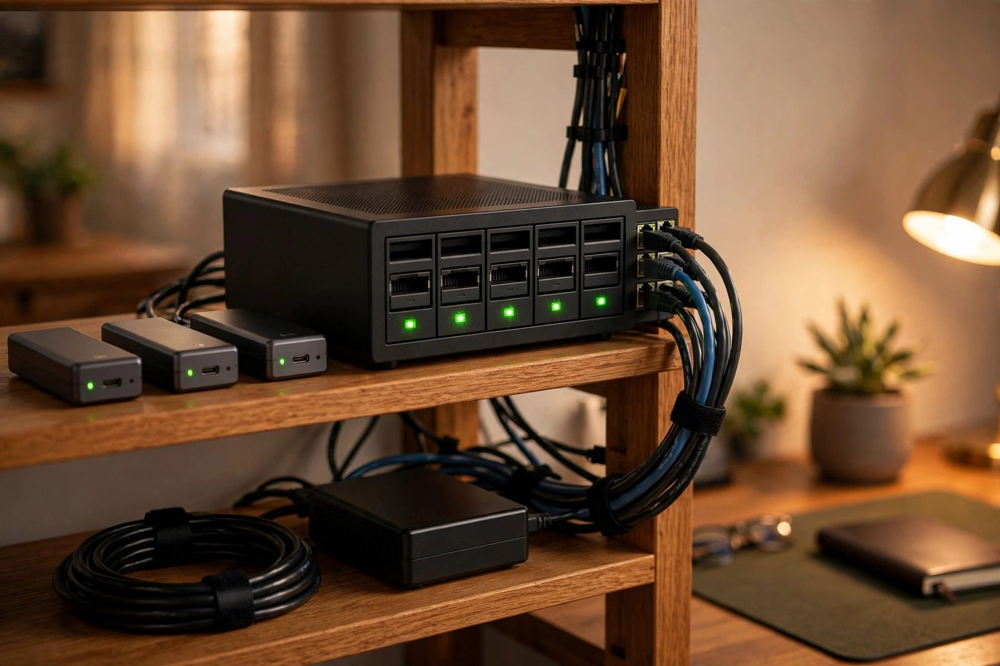

Data Sovereignty & Secure Media Stack
Self-hosted Nextcloud and Immich on external SSDs with BTRFS snapshots, multi-user ACL isolation, and a 3-2-1 offsite backup strategy to BorgBase and rsync.net.

Overview
This stack replaces Google Drive and Google Photos with fully owned infrastructure. Nextcloud AIO and Immich run in Docker on a BTRFS pool of external USB 3.2 SSDs, with per-user ACLs enforcing isolation and zstd compression reducing capacity needs. A 3-2-1 backup design keeps local BTRFS snapshots as fast recovery points, replicates encrypted archives to BorgBase, and keeps a secondary copy on rsync.net, aiming for GDPR-aligned retention with monthly restore drills.
Storage Architecture
external USB 3.2 SSDs)] BTRFS --> NC[Nextcloud AIO container] BTRFS --> IM[Immich container] NC --> U1[User namespace ACLs] IM --> U2[Multi-user libraries]
Backup Flow (3-2-1)
local recovery point] --> B[BorgBase
encrypted offsite backup] L --> R[rsync.net
secondary offsite copy] B --> V[Restore test monthly]
Implementation
Create the compressed BTRFS pool [PRIVILEGED]
Warning: mkfs.btrfs destroys all data on the target disks. Use stable /dev/disk/by-id/ names, never /dev/sdX (those can reorder between boots), and double-check each name before running. Note that -d single stripes data with no redundancy: one failed SSD loses the whole pool. That is a deliberate capacity tradeoff here; redundancy comes from the offsite backups, not the pool itself.
# Identify the disks by stable ID first
ls -l /dev/disk/by-id/
# DESTRUCTIVE: creates the filesystem (replace with your disks' by-id names)
mkfs.btrfs -d single -L data \
/dev/disk/by-id/usb-Samsung_SSD_A-0 \
/dev/disk/by-id/usb-Samsung_SSD_B-0
mount -o compress=zstd:3 /dev/disk/by-id/usb-Samsung_SSD_A-0 /mnt/dataDeploy Nextcloud AIO and Immich
Run each stack as its own Compose project. Do not merge unrelated stacks with multiple -f flags; that merges their networks, volumes, and service namespaces into one project.
docker compose -f nextcloud-aio.yml up -d
docker compose -f immich.yml up -dEncrypted offsite backup with Borg
Initialize the repository once with encryption, and store the passphrase somewhere safe: losing it loses the backups. Databases need consistent dumps: enable Nextcloud maintenance mode during the backup and pg_dump Immich's Postgres into the data tree first, because backing up open database files can produce unrestorable copies. A BTRFS snapshot is a local recovery point, not a backup; the offsite Borg archives are the backups.
# One-time: initialize the encrypted repository
export BORG_REPO="ssh://user@user.repo.borgbase.com/./repo"
export BORG_PASSPHRASE="a-long-passphrase-stored-in-a-password-manager"
borg init --encryption=repokey-blake2 "$BORG_REPO"
# Quiesce and dump databases before the backup
mkdir -p /mnt/data/db-dumps
docker exec nextcloud-aio-nextcloud php occ maintenance:mode --on
docker exec immich_postgres pg_dump -U postgres immich > /mnt/data/db-dumps/immich.sql
# Snapshot, then back up (container names are examples; use yours)
btrfs subvolume snapshot -r /mnt/data /mnt/data/.snapshots/daily
borg create --stats "$BORG_REPO::data-{now}" /mnt/data
docker exec nextcloud-aio-nextcloud php occ maintenance:mode --off
# borg prints archive statistics with --stats; the first run takes the longestKey Results
- 3-2-1 backup design in place: three copies, two offsite (BorgBase and rsync.net); restore drills run monthly.
- Replaces recurring cloud storage subscriptions with owned hardware (exact savings depend on capacity and drive prices).
- External USB 3.2 SSDs form the fast local tier (measure throughput on your own hardware before quoting numbers).
- Enforced multi-user isolation via filesystem ACLs preserved across container mounts.
How I built it
This project consolidates two goals I cared about: owning my files and photos outright, and surviving hardware failure or a house fire. The architecture separates the fast local tier from two independent encrypted offsite copies.
- Phase 1, build the local storage pool: Created a BTRFS pool across external USB 3.2 SSDs with zstd compression, giving transparent checksumming and cheap snapshots on commodity drives.
- Phase 2, deploy the services: Brought up Nextcloud AIO for files and Immich for photos as Docker containers on top of the pool.
- Phase 3, isolate users: Configured multi-user ACL isolation so each person's data stays in their own namespace.
- Phase 4, wire the 3-2-1 backups: Set up encrypted Borg backups to BorgBase and a second copy to rsync.net, keeping three copies with two offsite.
- Phase 5, prove restores work: Made restore testing a monthly routine, because a backup you have never restored is only a hope.
What you need
| Category | Item | Notes |
|---|---|---|
| Hardware | External USB 3.2 SSDs | Sized to hold files, photos, and snapshot history with headroom |
| Hardware | Linux host with USB 3 ports | Runs the containers and the BTRFS pool |
| Software | Docker and Docker Compose | Hosts Nextcloud AIO and Immich |
| Accounts | BorgBase and rsync.net accounts | The two independent offsite destinations |
| Skills | BTRFS administration and Borg basics | Snapshots, compression options, prune and check commands |
Challenges and lessons learned
- USB-attached storage reliability: external drives can drop off the bus under load, which BTRFS notices immediately. Lesson: use quality enclosures and cables, and monitor dmesg after any disconnect.
- Backup verification discipline: it is easy to let backups run silently for months. Lesson: schedule the monthly restore test like any other maintenance window and keep a log of each one.
- Deduplication surprises: Borg's deduplication keeps offsite sizes manageable, but the first full backup is still the long pole. Lesson: seed the initial backup over a fast local link before switching to incremental uploads.
What is next
- Add a second local mirror on separate hardware for faster recovery from total pool loss.
- Send BTRFS snapshots offsite directly as an additional recovery path.
- Add SMART monitoring with alerts so drive degradation is caught before failure.
- Evaluate an object-storage tier for cold archival of old photo originals.